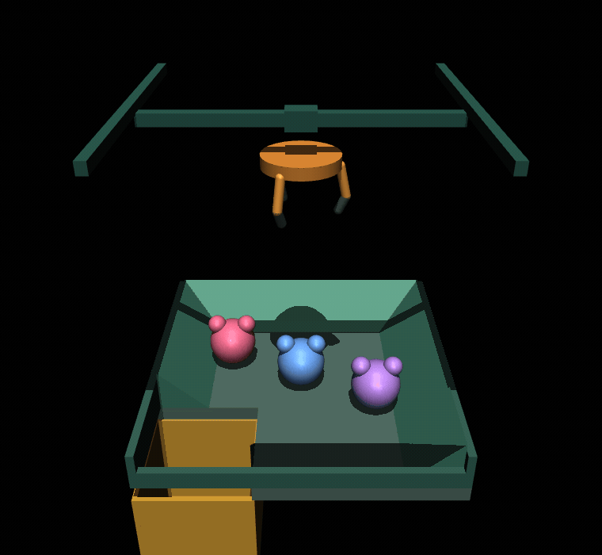

PickDoll 2주차 결과
조준 이후 집기부터 상판 구멍을 통한 배출까지 한 판의 흐름을 완성했다.
2주차 결과 · 자동 배출 완료
- 한 판 진행 — 조준 후 Enter를 누르면 하강, 집기, 상승, 배출구 이동, 놓기가 자동으로 이어진다.
- 배출 구조 — 왼쪽 앞 상판에 낙하 구멍을 만들고 아래쪽에 회수함을 배치했다. 인형은 물리적으로 구멍을 통과해 회수함에 쌓인다.
- 진행 제어 — 자동 진행 중에는 수동 이동과 추가 뽑기 입력을 잠근다. 24초가 지나도 동작이 끝나지 않으면 정지하고 R 초기화를 안내한다.
- 연속 검증 — 최종 구조에서 초기화 없이 10판을 진행했다. 세 인형의 획득 3회와 빈 집게 실패 7회가 끝난 뒤 매번 조작이 돌아왔다. 획득 수, 아래 회수함 보관, 중복 입력, 초기화와 시간 초과 처리를 확인했다.

집는 위치와 인형 자세에 따라 미끄러질 수 있다. 검증은 프로그램으로 지정한 조준 위치와 입력을 사용했다. 손님이 직접 플레이하는 테스트는 3주차에 진행한다.
실행과 조작
프로젝트 폴더에서 .\.venv\Scripts\python.exe pickdoll.py를 실행한다. R로 초기화한 뒤 Enter를 누르면 가운데 파란 인형을 집어 배출한다.
방향키로 조준하고 Shift로 미세 이동한다. Tab 또는 1~5로 카메라를 바꾼다. 자동 동작이 끝나면 바로 다음 인형을 조준할 수 있다.
다음 주차
주 6시간을 외형 마감 3시간과 조작감·플레이 테스트 3시간으로 나눈다. 본체 기둥, 상단 커버, 하단 캐비닛을 만들고 카메라와 조작 안내를 다듬는다. 게임패드 연결은 후속 작업으로 둔다.